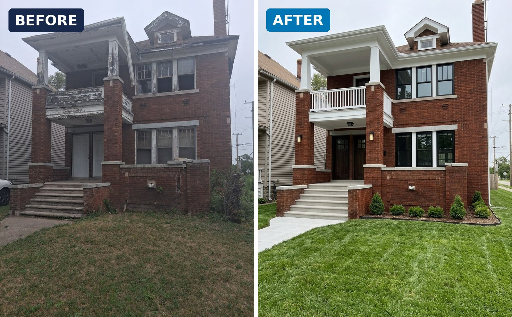
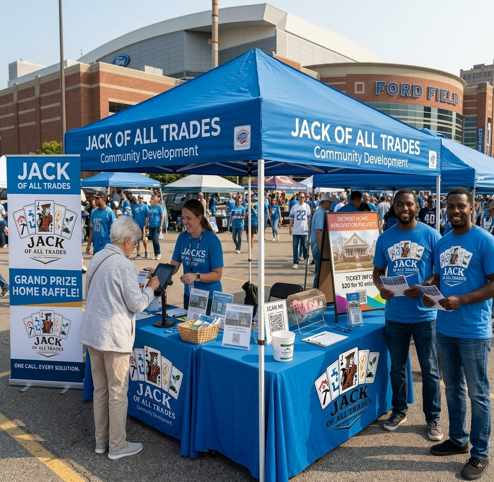

Empowerment
Equipping Detroiters with the skills, confidence, and career paths to shape their own futures.

Jacks of All Trades trains Detroit residents in six high-demand trades through hands-on apprenticeship and mentorship — then puts those skills to work on community projects that rebuild neighborhoods.
Trusted partners in Detroit's renewal

Jacks of All Trades merges workforce development with neighborhood revitalization. Students learn high-demand trades by restoring real properties — gaining certification, mentorship, and a direct path to employment while rebuilding the neighborhoods they call home.
Jacks of All Trades Apprenticeship and Mentoring Program empowers disadvantaged youth with hands-on training in carpentry, electrical, plumbing, landscaping, drywalling, and roofing — while restoring dilapidated homes and revitalizing Detroit neighborhoods. Our mission is to reduce minority homelessness, support low-income families, and strengthen the city’s economic foundation by increasing tax revenue, utility revenue, and habitable housing inventory through strategic partnerships with the Detroit Land Bank, City Council, Section 8 Housing, and local tradesmen.
Jacks of All Trades Apprenticeship and Mentoring Program (JOATAMP) is a Detroit-rooted nonprofit workforce-development and community-revitalization initiative designed to address multiple systemic challenges through one coordinated, self-sustaining model.
JOATAMP empowers disadvantaged youth through hands-on training and mentorship in carpentry, electrical, plumbing, landscaping, drywalling, and roofing — while simultaneously restoring dilapidated and abandoned homes throughout Detroit. These homes serve as live training environments, allowing students to gain real-world experience while directly contributing to neighborhood stabilization.
Like a well-balanced system in motion, each component of the program reinforces the next. As students learn skilled trades, vacant properties are transformed into safe, livable housing. As housing inventory increases, opportunities expand for Section 8 programs, low-income families, and individuals experiencing homelessness. As homes return to productive use, the city benefits through new tax revenue, utility revenue, and reduced blight — strengthening Detroit’s economic foundation.
Through strategic partnerships with the Detroit Land Bank Authority, City Council, Section 8 housing providers, local contractors, and experienced tradesmen, JOATAMP helps clear land-bank inventory while developing the next generation of skilled workers. These partnerships build credibility, trust, and long-term collaboration, ensuring that revitalization efforts are community-driven and locally formed.
JOATAMP is uniquely positioned to succeed because it is built from lived experience and local knowledge. With a deep understanding of Detroit’s neighborhoods, its housing challenges, and its people, this is not a single-issue program — it is a comprehensive model where education, housing, workforce development, and economic growth move together toward lasting impact.
The principles behind every home we restore and every future we help build.
Equipping Detroiters with the skills, confidence, and career paths to shape their own futures.
Restoring vacant homes and blocks so neighborhoods — and the people in them — can thrive.
Honest work and full transparency with every dollar, decision, and promise we make.
Working shoulder-to-shoulder with students, mentors, partners, and neighbors to go further together.
Holding every project and every graduate to a high, professional standard.
A closed loop where student growth and neighborhood renewal reinforce one another.
Comprehensive instruction across six high-demand trades with recognized certification.
Every student is matched with an experienced professional for guidance and support.
Students renovate real properties under supervision — demolition to finishing.
Completed homes go to families, beautifying lots and rebuilding neighborhood pride.
Proceeds fund the next property, growing our reach across the city.
Graduates move into apprenticeships and full-time jobs with partner companies.
One of the community projects we take on: restoring a vacant Detroit home from the ground up — inside and out — with our students doing the work. The 50/50 raffle funds it: half the pot goes to one lucky winner, the other half to the renovation.


Neighbors, students, families, and supporters from across Detroit stop by our booth to enter the raffle and back the rebuild. Come say hello — and grab your tickets in person.
Enter the 50/50 raffle"This program gave me more than skills — it gave me a future. I went from no direction to a certified electrician with a full-time job. Now I'm helping rebuild the neighborhood I grew up in."
Every gift funds skilled-trades training, tools, and the renovation of Detroit homes. 100% reaches the mission — zero platform fees.
Point your camera at the code, or tap the button. Apple Pay, Google Pay, and debit/credit accepted — with an instant, tax-deductible receipt where applicable.
Donate now →Scan the code, or send to $JacksAllTrades.
Open Cash App →No automatic receipt — email info@joatamp.org for one.
In your bank app’s Zelle, scan to send to Jack’s of All Trades A&M Program Inc.
No automatic receipt — email info@joatamp.org for one.
Want a tax-deductible receipt? Use the Zeffy option above — your receipt is emailed automatically.
Get renovation milestones, raffle drawings, and enrollment dates in your inbox.